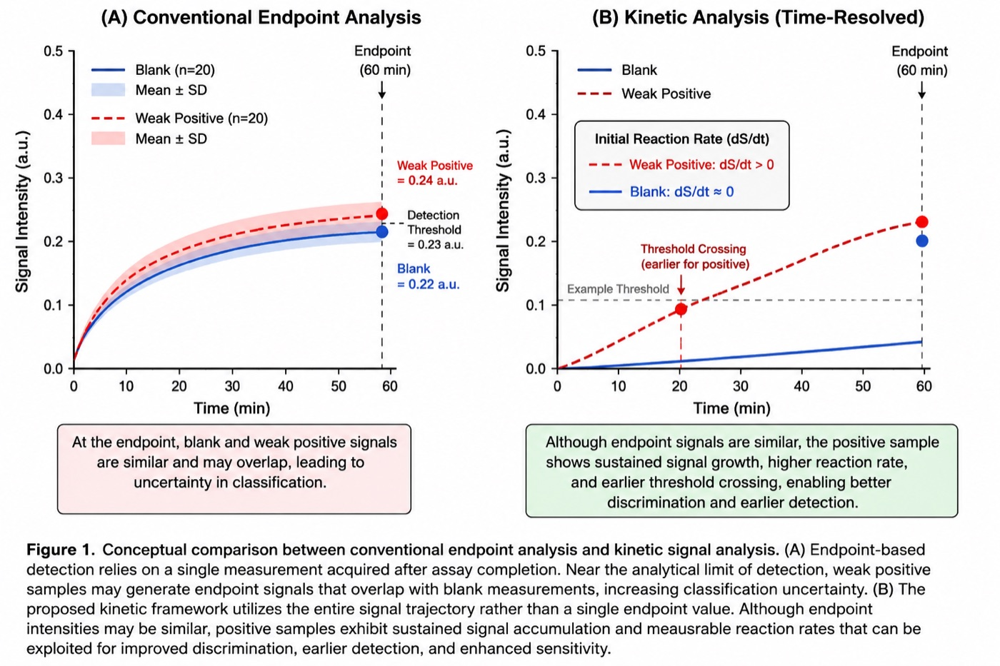

Materials and consumables
Support for nitrocellulose membranes, sample pads, conjugate pads, absorbent pads, housings, and RUO kit planning.

Diagnostics and assay development
MicroCD Labs helps teams source diagnostic materials, plan assay workflows, evaluate cartridges, and prepare research-use kits or early product-development packages.
Development path
The strongest meeting signal is that diagnostics teams need more than a shopping cart. They need material selection, assay context, documentation, automation readiness, and a route toward reproducible testing.
Support for nitrocellulose membranes, sample pads, conjugate pads, absorbent pads, housings, and RUO kit planning.

Translate assay requirements into cartridge features, fluidic paths, sample handling, timing, and test-ready workflows.

Prepare supplier comparisons, technical memos, QMS-readiness questions, and partner packages for early diagnostics development.
MicroCD Labs role

Research foundation
A MicroCD Labs-aligned preprint is available online on Preprints.org: Improving Detection Limits in Capillary Diagnostic Assays Through Kinetic Image Analysis and Time-Resolved Signal Extraction. The work supports our specialty in time-resolved signal extraction, endpoint versus kinetic readout comparison, blank and low-positive behavior, SNR evolution, and low-concentration assay feasibility.